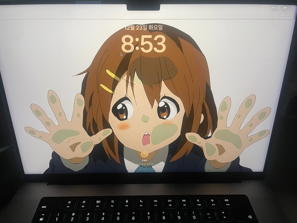
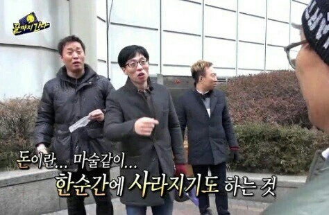
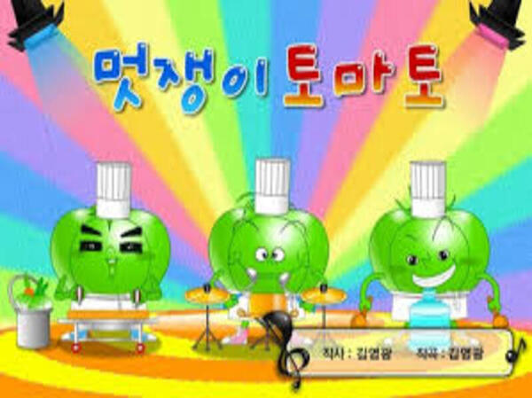
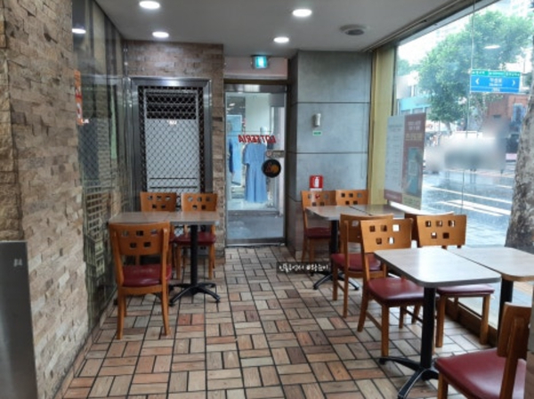
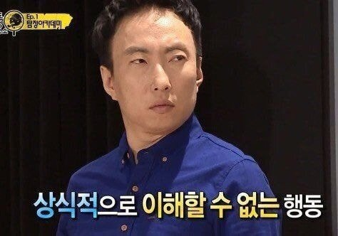
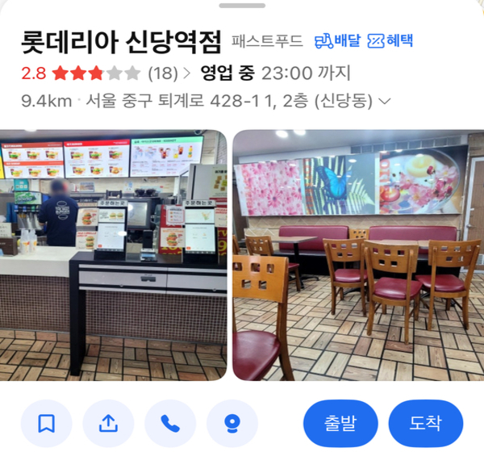
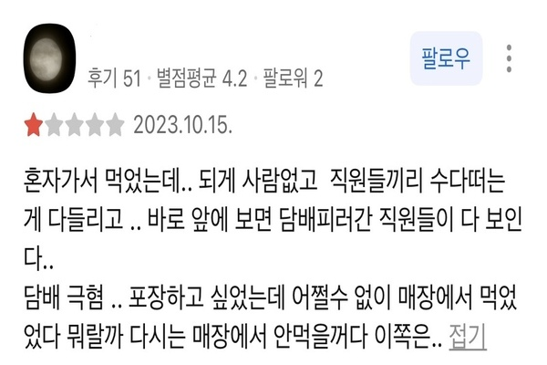

방학을 맞아 며칠 동안 맥북을 방치해두었는데, 충전 상태를 확인하려고 오랜만에 맥북을 열었다가 정말 망치로 머리를 맞은 것 같은 기분이 들었다. 시간은 새벽 3시. 떨리는 손으로 다급히 맥북 모니터 수리값을 검색했다. 그리고 차분히 숫자의 0을 세어 본 나는 그대로 붕괴됐다. 애초에 그 가격에 팔 거면 대대손손 손녀의 손자까지 물려줄 수 있을 정도의 내구성으로 만들어야 하는 거 아닌가? 멱살을 잡을 스티브잡스는 이제 세상에 없다. 수리값으로 모아 놓은 목돈을 다 쓰게 될 판이었다. 우울히 묫자리를 알아보는 대신, 내가 다음으로 들어간 곳은 바로 알바몬이었다.

그런데 알바를 구하는 것도 쉽지 않았다. 해본 알바라곤 학원 알바밖에 없는 나는 어떤 곳에서도 환영받지 못했다. 지원서를 구구절절 마음과 열정을 담아 써 보냈지만, 매정한 사장님들은 지원서를 열람조차 하지 않으셨다.(알바구한다면서요…) 그렇지만 그런 나를 유일하게 불러주는 곳이 있었다. 심지어 집에서도 걸어서 몇 분밖에 걸리지 않는 롯데리아였다. 내 지원서를 본 바로 다음 날 문자를 보내 그날 면접을 보자고 하셨고, 나는 기쁜 마음으로 첫 알바 면접을 보러 나가게 되었다.

사실 프랜차이즈 햄버거 가게의 업무 강도에 대한 악명은 주변 친구들에게 들어 잘 알고 있었다. 하지만 나는 어린 시절 스폰지밥을 보고 햄버거 가게 알바의 로망을 키웠으며, 롯데리아의 딸이 되겠다는 경건한 결심으로 가게 문을 열고 들어갔다...

가게 내부는… 좋게 말하면 레트로했고, 솔직히 말하자면 누추했다…! 면접 시간보다 30분이나 지나서야 등장한 매니저는 마치 검은 토마토 같았다. 울퉁불퉁 멋진 몸매에 검은 옷을 입고.., 양팔에는 용과 오니?가 뛰노는 이레즈미 문신이 가득했다. 진한 담배 냄새까지 풍기고 있었는데… 마치 롯데리아의 지배자, 악마 같은 아우라에 나는 순간 겁먹을 수밖에 없었다.

하지만 의외로 면접은 평범했다. 그는 집이 근처냐, 출근하게 되면 언제부터 근무할 수 있냐 정도만 물었고, 30분을 기다린 면접은 5분 만에 끝나 버렸다. 아직 어리둥절한 나에게 이제 가보라며 그는 몸을 돌렸다. 그리고 그가 주방으로 들어가자마자 들린 것은 귀를 의심하게되는 거대한 고성이었다. 그는 무언가 건수를 잡았는지 그 타임에 있던 알바생을 육두문자와 함께 탈탈 털기 시작했다.
나는 자리에서 일어나려고 테이블을 짚었다. 그런데 찌든 기름기 때문에 손자국이 그대로 남는 것을 보고, 들어올 때와는 전혀 다른 결심을 한 채 매장을 나섰다. 결국 롯데리아의 수양딸이 되는 것은 포기하고 다른 알바를 알아보기로 했다.

궁금한 마음에 카카오맵으로 찾아보니 그곳은 평점 1.5짜리 롯데리아였다. (롯데리아에서 이런 평점은 처음 봤다… 근데 지금보니 1점정도 더 늘었더라)

카카오맵의 불호 리뷰 대부분도 매장의 위생과 직원의 태도에 대한 이야기였다. 깊이 공감하며 나는 모든 리뷰에 좋아요를 눌렀다. 알바를 구하기 전에는 꼭 그 매장의 카카오맵이나 네이버 리뷰를 찾아보자는 교훈을 얻었다. 그래도 고생 끝에 낙이 온다고 했던가. 다행히도 집 근처에서 다시 알바를 구하게 되었다. 달달한 시급과 함께 달달한 업무 강도가 따라오는 꿀알바였다. 지금도 감사한 마음으로 다니고 있다.액땜을 해준 맥북과 평점 1.5 롯데리아에게도 감사하다. ^^